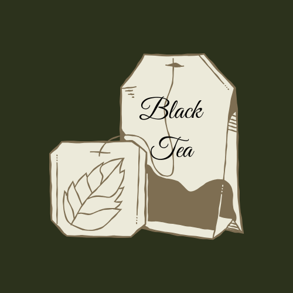
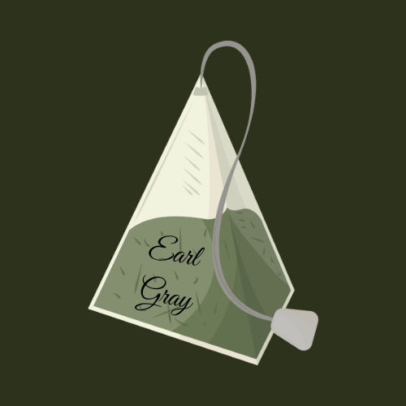
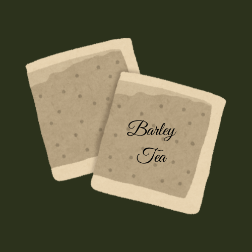

“Meanwhile, let us have a sip of tea. The afternoon glow is brightening the bamboos, the fountains are bubbling with delight, the soughing of the pines is heard in our kettle. Let us dream of evanescence and linger in the beautiful foolishness of things.”
Kakuzō Okakura, The Book of Tea
Documentation
Tea can be found in almost every household across the world. The camellia tea plant, which was originally only cultivated in China thousands of years ago is now close to the second most consumed beverage on the planet. It accompanies every part of life, from every day breakfast, to formal social occasions or simple afternoon get-togethers. But it is not just remarkable in its prevalence, but also its versatility. By simply altering the manufacturing process, changing the amount of oxidation, a single leaf turns into a variety. With this variety, different cultures from all across the globe were able to take the leaf and adapt it to their own needs and tastes, taking care and pride in their own preparation styles and knowing in their own right, theirs is the best way to make tea.
The British like their tea simple, served hot, with a splash of milk, and a side of tiny sandwiches, giving way to the popular tradition of afternoon tea. While countries like India favour a sweeter, spiced tea, where loose tea leaves are boiled in milk together with warm spices like cardamon and nutmeg. Kenya’s tea culture is heavily influenced by both the British and the Indians and so both preparation styles can be found there. In Japan, tea is ground into a fine powder called matcha and is found at the centre of the Zen Buddhist Japanese Tea Ceremony. While in Bhutan they serve their tea salty, flavoured by mixing in yak butter. From variety emerge cultures and traditions that, while different, further embed tea into our global identity.
Art of Tea is a prototype for a library of digital resources that traces not just the complex history of the tea leaf and its ties to shifting global powers, global trade, wars and colonialism, but also the different ways it has become interwoven into so many cultures across the world.
The project is built on the architecture of IIIF, a framework for sharing and creating interoperable digital resources, accessible across the internet. On top of this is the ArTea graph, which conceptually maps all the items in the library to the various aspects of tea, linked to the subject authority files of the Library of Congress (LOC). The final goal is to create a digital library which is fully semantically interconnected, linking not just the subjects of the items but also the entities within them, aided by IIIF’s annotation and search services. In this way the library will not just aid in the study of the history and culture of tea, but also be a digital semantic reflection of the long-lasting influence of the simple tea leaf.
Workflow
Study of the Domain and Selection of Items
The items selected for our digital library emphasize historical and cultural significance from a humanities perspective. We selected our book from publicly available sources from the Internet Archive and the Library of Congress which are open access, or in the public domain. For the translation of The Classic of Tea, we determined that the work holds exceptional cultural and historical value, as it is regarded as the earliest book written about tea. Based on this significance, we contacted the translator directly and obtained permission for academic use.
- The Book of Tea by Okakura Kakuzo, which introduced the philosophy of Japanese tea ceremony culture to Western readers.
- Little Tea Book by Arthur Gray, which compiles historical stories and references to tea in poetry and literature across different cultures.
- The Tea room booklet, which is a collection of narratives and guides the founding and management of early 20th-century tea rooms.
- Journey to the Tea Countries of China by Robert Fortune, a travelogue offering insights of the formerly mysterious tea cultivation in China.
- An English translation of The Classic of Tea by Lu Yu, the first known monograph on tea and tea culture in the world.
In addition to textual materials, we collected artwork for their visual and cultural significance. These images were selected primarily from the Open:Wellcome Collection, which provides free and openly accessible images through JSTOR. These include depictions of tea rooms, tea gatherings, plantations. By combining textual and visual sources, the collection reflects the multifaceted meanings of tea across cultures.
Structuring the Metadata
We began by identifying which types of information should be recorded in our metadata collection. To structure the data semantically, we adopted existing schemas such as BIBFRAME and DCTERMS while creating a dedicated namespace called ArTea to model the internal structure of our digital library. To represent semantic relationships among works, we employed Library of Congress Subject Headings (LCSH) as controlled vocabulary for subject headings in order to realize Linked Open Data (LOD). Furthermore, we created links to external authority files such as GeoNames for locations and VIAF for figures. The ontology has been put together in a RDF file, using the turtle format. Through this process, we aimed to ensure interoperability, reusability, and semanticity in our metadata design.
Implementation of IIIF
A central component of this project is the implementation of International Image Interoperability Framework (IIIF), which enables interoperable image delivery of digital objects across platforms. Beyond theoretical understanding, one of our goals was to acquire practical skills in creating and managing IIIF manifests.
Image resources were obtained through the Image API by uploading them on the IIIF workbench available on GitHub. These image resources were then used to create the manifest, enriched with metadata using the Manifest Editor. In the case of books, the structure was expressed through the use of canvases and ranges, allowing hierarchical representation of the books. Through this process, manifests conforming to the Presentation API specification were produced. Finally, the items are displayed by embedding the Universal Viewer within our web interface. For some books, existing manifests provided by the Internet Archive have been integrated into our collection.
We initially aimed to implement transcription annotations and integrate them via the IIIF Search API, however this would have required additional server infrastructure and was therefore not realized within the scope of this project. Nevertheless, through this process we gained a deeper understanding of IIIF as a crucial framework in digital humanities.
Conclusion and Future Directions
The aim of this project was to create a prototype of a digital library of books and images related to tea. We sought to select public domain materials, structure them semantically, and publish them via a dedicated website, ensuring accessibility, navigability, and reusability. From this perspective, tea proved to be an ideal case study, as it naturally connects to multiple domains, including culture, social practices, history, economy, religion, and beyond.
As a prototype, we focused on the core elements that define a semantic and digitally connected environment: the use of standard ontologies and IIIF-based visualization. The adoption of established ontologies for books and images ensures semantic consistency and long-term interoperability, allowing the data to be reused and integrated into broader knowledge networks. At the same time, IIIF enables high-resolution visualization and a structured description and navigation of complex digital objects.
If we look ahead and consider how this project might develop in the future, several possible directions emerge, all oriented toward enhancing both discoverability and scholarly usability, while also extending what has already been implemented to the entire library rather than limiting it to a small sample used as a demonstration.
One potential development would be the implementation of controlled Subject Headings as searchable access points. This would allow users to explore the collection through thematic and conceptual pathways, making objects more easily browsable and comparable on the basis of shared subjects. It would also make it possible to fully exploit the potential of IIF’s annotation structure and search API. In this way, the library could move beyond simple item-based navigation and offer a more relational and research-oriented experience.
Another important direction concerns interactivity and information visualization. Explicitly modeling Persons and Places as semantic entities, and mapping their relationships to works, events, and contexts, would make it possible to highlight the complex cultural networks surrounding tea across time and geography. This would allow users not only to search and explore, but also to learn through interactive tools such as dynamic maps and semantic network visualizations.
Further expansion might include providing downloadable XML files for all encoded books, supporting transparency, reuse, and reproducibility.
From the outset, we envisioned a digital library designed to be easily expandable, potentially allowing users themselves to interact with and enrich its contents. In this sense, the project could evolve into a more comprehensive example of a fully digital library, and possibly become a reference model for semantic modeling and interconnected knowledge construction.
Bibliography and References
Freire et al. 2020. “Cultural Heritage Metadata Aggregation Using Web Technologies: IIIF, Sitemaps and Schema.Org.” International Journal on Digital Libraries. https://doi.org/10.1007/s00799-018-0259-5.
OTR Food & History. 2025, 9th September. Spies, Smugglers, and How a Bitter Plant Became the World's Favorite Drink. [Video]. YouTube. https://www.youtube.com/watch?v=dyc-vMdlfII.
Snydman, Sanderson, Cramer. 2015. “The International Image Interoperability Framework (IIIF): A community & technology approach for web-based images”. In Archiving Conference 2015 Proceedings. https://stacks.stanford.edu/file/druid:df650pk4327/2015ARCHIVING_IIIF.pdf.
TED-Ed. 2017, 16th May. The history of tea - Shunan Teng. [Video]. YouTube. https://www.youtube.com/watch?v=LaLvVc1sS20.
Tomasi, F. 2020. Digital humanities e organizzazione della conoscenza: una pratica di insegnamento nel LODLAM. AIB Studi, 60(2). https://doi.org/10.2426/aibstudi-12068.
Tools
ArTea GitHub repository: https://github.com/the-art-of-tea/The-Art-Of-Tea.
ArTea ontology: https://github.com/the-art-of-tea/The-Art-Of-Tea/blob/main/TheArtOfTea.ttl.
ArTea website: https://the-art-of-tea.github.io/The-Art-Of-Tea/.
Bibframe: https://www.loc.gov/bibframe/docs/index.html.
Canva for logo: https://www.canva.com/.
Dublin Core Metadata Initiative (DCMI): https://www.dublincore.org/specifications/dublin-core/dcmi-terms/.
Geonames: https://www.geonames.org.
GitHub workbench for uploading images: https://workbench.gdmrdigital.com/.
IIIF tutorial: https://training.iiif.io.
IIIF: https://iiif.io/.
Internet Archive (books): https://archive.org/.
JSTOR (images): https://www-jstor-org/.
Library of Congress (LOC): https://www.loc.gov/.
Library of Congress Subject Headings (LCSH): https://www.loc.gov/aba/publications/FreeLCSH/freelcsh.html.
Linked Open Data (LOD): https://www.w3.org/egov/wiki/Linked_Open_Data.
Manifest Editor: https://manifest-editor.digirati.services/.
Shared Canvas Data Model: https://iiif.io/api/model/shared-canvas/1.0/.
The Classic of Tea website: https://www.studentoftea.com/p/the-classic-of-tea-and-its-english-translation.
The Virtual International Authority File (VIAF): https://viaf.org/.
Universal Viewer (UV): https://uv-v4.netlify.app/.
The Team

Ilaria De Dominicis
Tea preference: Black Tea with no sugar and some chocolate cookies.

Regina Manyara
Tea preference: ...

Shiho Nakamura
Tea preference: Refreshing with iced barley tea on a sunny day.